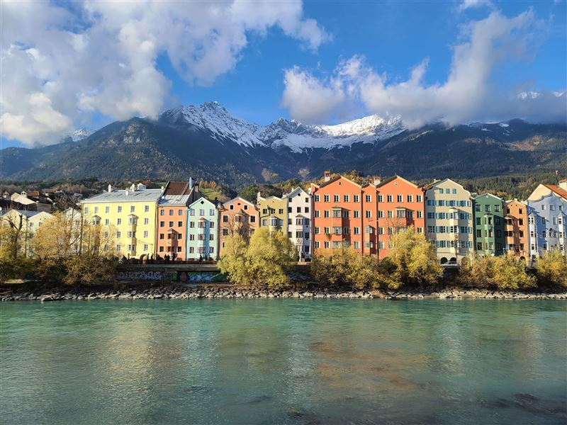
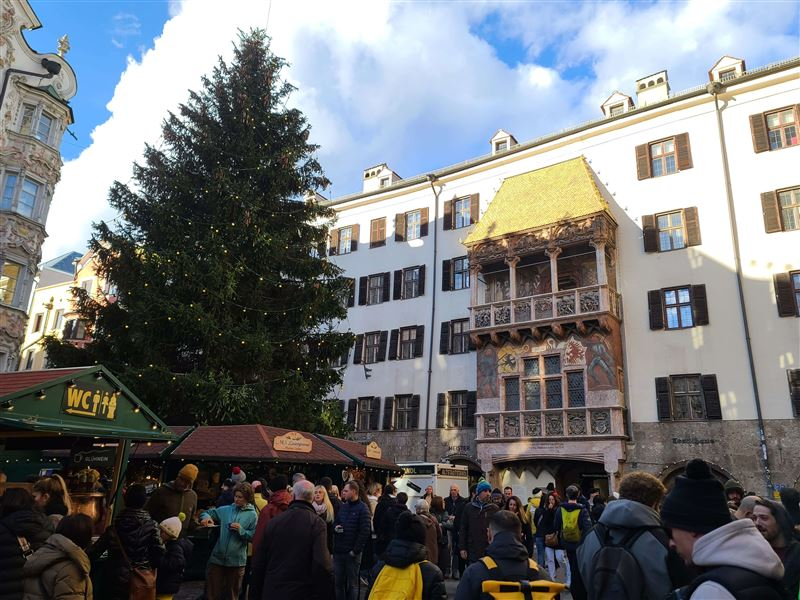
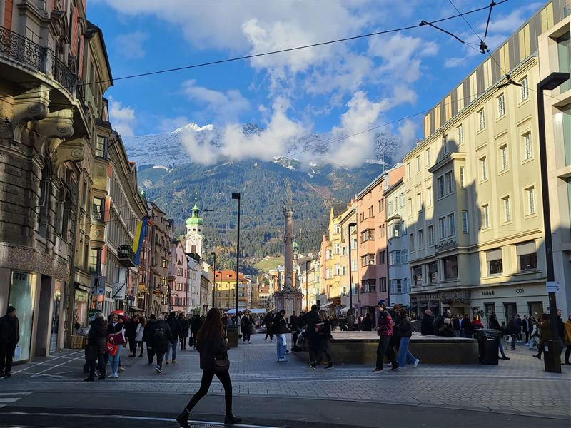
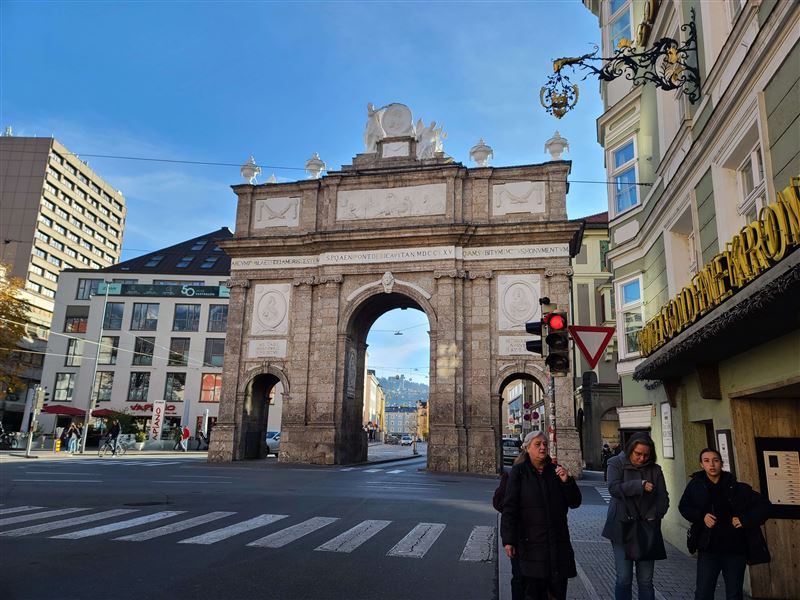
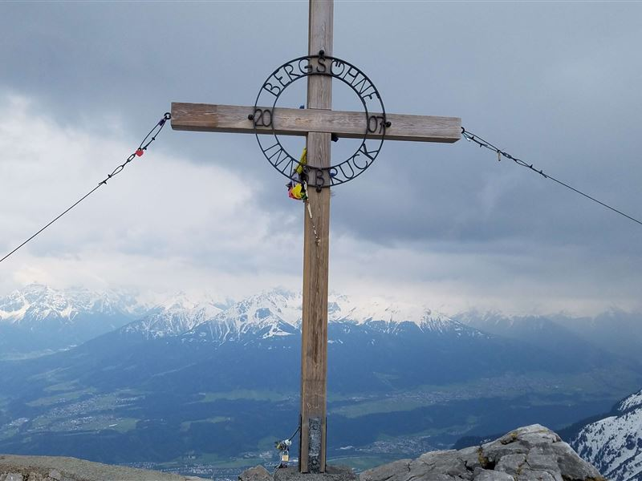
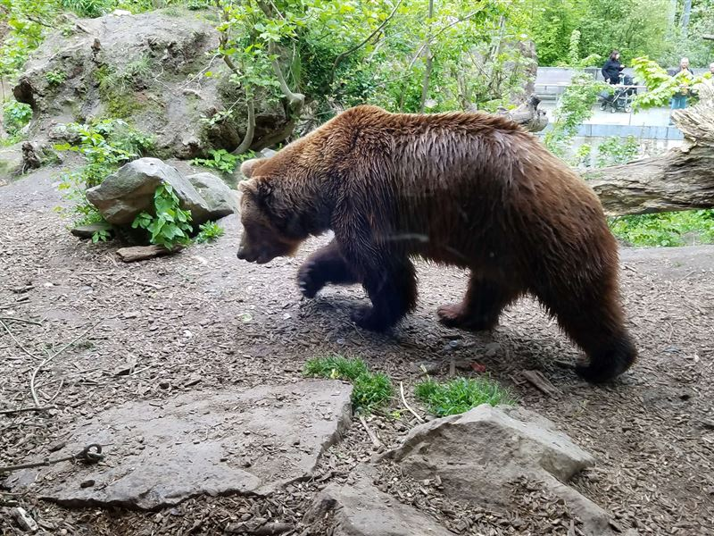
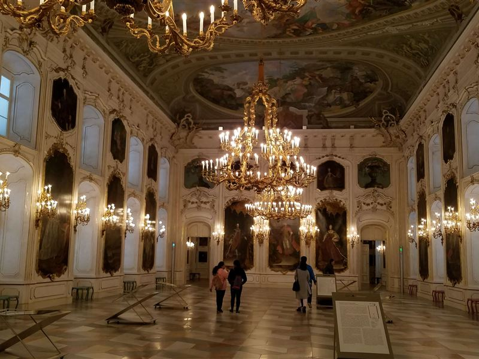
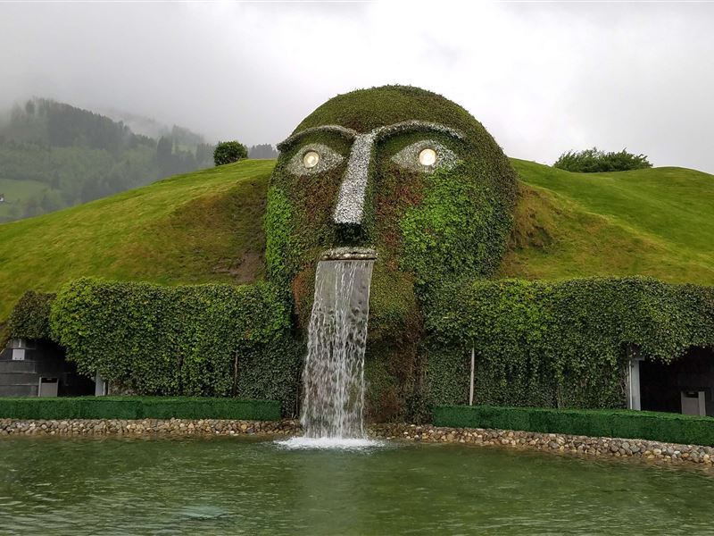
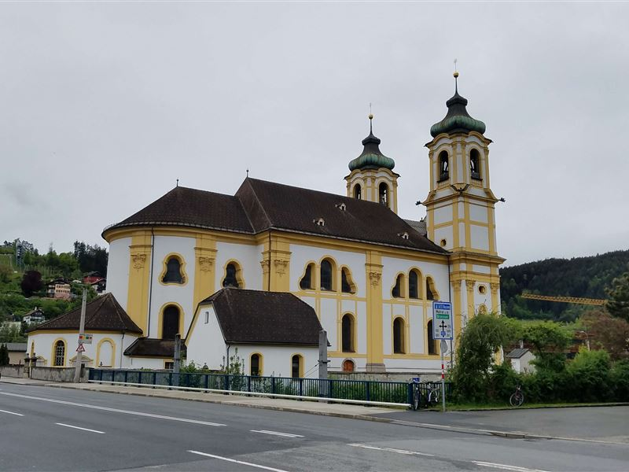
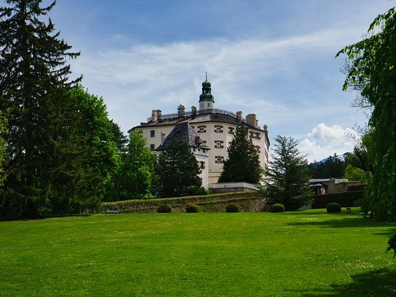

Explore Innsbruck
A Brief History
Innsbruck grew at a bridge crossing over the Inn and became the seat of Tyrolean counts before rising as a Habsburg residence from the 15th century. Court churches, the Golden Roof, and riverside quarters reflect its role in Alpine trade, mining administration, and dynastic representation. The city hosted the Winter Olympics in 1964 and 1976, linking its mountain setting to modern sport and tourism. Today Innsbruck pairs a walkable old town with cable-car access to surrounding peaks, carrying forward its identity as a gateway between Italy and central Europe.
Attractions Map
Top Sights & Activities

Colourful Houses
The colourful houses of the Mariahilfzeile line the left bank of the Inn in the St. Nikolaus district, a row of late Gothic and Renaissance facades rebuilt after fires in the 15th century. The ensemble is viewed across the river from Marktplatz and forms a recognised image of Innsbruck with the Nordkette behind.

Goldenes Dachl
Emperor Maximilian I commissioned the Golden Roof, a late Gothic oriel with 2,657 gilded copper shingles, on the Neuhof building between 1497 and 1500. Reliefs and frescoes record court life on Herzog-Friedrich-Strasse. The museum below presents exhibits on Maximilian I and access to the oriel viewpoint.

Town Square
The square widens along Herzog-Friedrich-Strasse at the Golden Roof, forming the historic market and civic centre of Innsbruck since medieval times. Pedestrian arcades, the city tower, and old town hall frame a space used for markets, festivals, and Olympic ceremonies. The car-free zone links the Inn bridge with Maria-Theresien-Strasse.

Triumphpforte
Empress Maria Theresa ordered the Triumphpforte on Maria-Theresien-Strasse in the 1760s, using stone from a demolished medieval gate. Baroque reliefs by Balthasar Moll commemorate the wedding of Archduke Leopold II and the death of Emperor Franz I Stephan in 1765. The arch marks the southern end of the main boulevard.

Hafelekarspitze
Hafelekarspitze rises above Innsbruck at the northern end of the Nordkette range and is reached by cable cars from the Hungerburg station. The summit viewpoint looks over the Inn valley and city basin toward surrounding Alpine peaks. Trails and a research station occupy the ridge at about 2,334 metres.

Alpenzoo Innsbruck
Alpenzoo Innsbruck collects alpine animal species on a hillside above the Inn near the Hungerburgbahn. Founded in 1962, its terraced enclosures present ibex, bears, birds of prey, and other mountain fauna. Paths connect exhibits with views toward the city and Nordkette.

Hofburg Innsbruck
The Hofburg in Innsbruck was a Habsburg residence rebuilt in Baroque form after earthquake damage in the 17th century. Imperial apartments, the Giant Hall, and portraits record court life in Tyrol. The palace faces the old town across Herzog-Friedrich-Strasse.

Swarovski Kristallwelten
Swarovski Kristallwelten is a museum and exhibition space in Wattens east of Innsbruck founded by the crystal manufacturer. Chambers designed by artists present installations, history, and product displays within a landscaped park. The Giant greets visitors at the entrance to the complex.

Pfarrkirche und Basilika Mariae Empfängnis
The parish church of the Immaculate Conception overlooks Maria-Theresien-Strasse with a Baroque tower and dome completed in the 18th century. Stucco interiors and ceiling frescoes illustrate Counter-Reformation patronage in Tyrol. The basilica remains the main city parish church of Innsbruck.

Schloss Ambras Innsbruck
Schloss Ambras was built by Archduke Ferdinand II in the 16th century on a hillside south of Innsbruck. Renaissance halls, the Spanish Hall, armour collections, and portrait galleries occupy the upper and lower castles within landscaped grounds. The KHM museum presents Habsburg collections above the city.